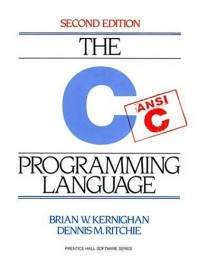

Linguagens e Ambientes de Programação (2018/2019)
Teórica 11 (10/abr/2019)
Revisão da linguagem C.
Características e história. Padronizações do C.
Porque vamos trabalhar com a linguagem C?
Vamos usar o paradigma imperativo.
Elementos Básicos. Tipos básicos.
Variáveis.
Estruturas de controlo.
Introdução à linguagem C

Dennis Ritchie
 Brian Kernighan
Brian Kernighan
Nota prévia
Esta é a segunda ou terceira cadeira em que os alunos lidam com a linguagem C. Nas próximas aulas faremos um percurso pela maioria dos mecanismos da linguagem C, discutido-os com base nos conceitos gerais apresentados na cadeira.
Mas a ênfase será colocada nas seguintes partes, onde se espera que os alunos ganhem novas competências:
- Estruturas de dados dinâmicas e manipulação de apontadores.
- Acesso direto à memória a baixo nível.
- Polimorfismo implementado usando apontadores e macros.
- Módulos.
- Discussão das inseguranças da linguagem C.
Nesta linha:
- A 2ª aula prática desta parte de LAP será sobre estruturas de dados dinâmicas e manipulação de apontadores.
- O 2º projeto de programação, o 2º teste e o exame, no que diz respeito ao C, tenderão a ser sobre estruturas de dados dinâmicas, manipulação de apontadores e acesso à memória a baixo nível.
Vamos usar o paradigma imperativo
Em C deve-se programar de forma assumida usando o paradigma imperativo. Entre programar um algoritmo usando um ciclo ou uma função recursiva, muitas vezes devemos optar pelo ciclo, mesmo que porventura a função recursiva fosse mais legível. Em geral estamos dispostos a pagar alguma coisa pela maior legibilidade, mas neste caso o preço pode ser excessivo.
Ao contrário do OCaml, a linguagem C (e também o Java, por exemplo) não está otimizada para suportar recursividade de forma económica. Em OCaml é possível escrever funções recursivas que funcionam praticamente sem gastar pilha de execução (complexidade espacial constante). Mas na generalidade das implementações de C, as funções recursivas gastam muita pilha de execução (complexidade espacial linear, na melhor das hipóteses).
Claro que há muitas situações especiais em que, por exemplo, o uso da técnica de divisão e conquista nos conduz à criação de funções recursivas e devemos aceitar isso. Ou até alguém pode querer, por opção pessoal, escrever código recursivo mais legível, aceitando o preço de ter de usar muito mais memória para correr os programas. No entanto, nesta disciplina queremos mesmo praticar a escrita de código imperativo e de ciclos mais ou menos complexos.
Algumas características do C
- Concebida e implementada por Dennis Ritchie entre 1969 e 1973 nos Bell Labs da AT&T. A primeira versão do Unix foi escrita em Assembler, mas em 1973 o Unix foi reescrito em C.
- Uma das linguagens atualmente mais populares tem sido utilizada para escrever todo o tipo de aplicações tais como compiladores, bases de dados, sistemas operativos (Unix por exemplo), editores gráficos e de texto, etc.
- É uma linguagem padronizada com standards ANSI e ISO.
- Linguagem de alto nível, mas que oferece facilidades para manipulações de baixo nível, nomeadamente acesso direto à memória. Originalmente concebida para programação de sistemas, o C permite ao programador escrever código muito eficiente e com acesso direto aos recursos da máquina.
- Apesar dos mecanismos de baixo nível, a linguagem encoraja independência da máquina. Este aspeto é extremamente importante pois cumpre um dos objetivos das linguagens de programação que é a possibilidade de escrever programas independentes de cada máquina particular.
- A maioria das implementações são muito eficientes.
- Necessidade de uma boa disciplina na programação para produção de programas legíveis --> WOP - 'write only programming' (observação irónica).
- Tipos básicos: caracteres, inteiros, reais, booleanos, enumerados.
- Tipos derivados: vetores, registos, uniões, apontadores.
- Tipificação fraca: por exemplo, os caracteres e os valores enumerados são tratados como inteiros.
- Não têm gestão automática de memória (ao contrário do Java e do OCaml). É necessário efetuar gerir a memória manualmente (usando as funções "malloc" e "free"). A gestão manual de erros é uma conhecida fonte de erros no software.
- Estruturas de controlo: condicionais, iterativas, seletivas.
- Funções. Recursividade é suportada. Não suporta aninhamento de funções.
- Aritmética de apontadores.
- Modularidade e compilação separada.
- Biblioteca padrão.
- Oferece um grande controlo ao programador:
- a nível sintático devido ao sistema de macros implementado no pré-processador;
- a nível de dados por causa dos apontadores, uniões e campos de bits;
- a nível de abstrações de execução por causa dos apontadores para função;
- a nível de modularidade devido a um sistema de módulos simples e flexível que suporta compilação separada e ocultação de informação.
Exemplo 1
#include <stdio.h>
int fact(int i)
{
if( i==0 ) return 1 ;
else return i * fact(i-1) ;
}
int main(void)
{
int n ;
for( n = 0 ; n < 10 ; n++)
printf("fact(%d)=%d\n", n, fact(n)) ;
return 0 ;
}
Exemplo 2
int main(int argc, char *argv[])
{
int i ;
for( i = 0 ; i < argc ; i++ )
printf("%s\n", argv[i]) ;
return 0 ;
}
Padronizações do C
- K&R C - Padrão informal estabelecido em 1978 com a publicação da 1ª edição do livro "The C Programming Language". Os argumentos das funções não eram validados e as funções retornavam inteiros por omissão.
- Ansi C89 - Padrão criado em 1983 mas só ratificado em 1989. Foram introduzidos protótipos que, quando presentes, permitem validar os argumentos e resultado das funções.
- ISO C90 - O padrão anterior foi adotado com muito ligeiras alterações pela ISO em 1990.
- ISO C99 - Padrão de 1999. Introduziu diversas características úteis tais como flexibilidade quanto ao ponto onde se definem as variáveis, vetores de tamanho variável e booleanos.
- ANSI C99 - Em 2000, a ANSI adotou o padrão anterior sem alterações.
- ANSI C11 - Padrão ratificado em Dez 2011. Destaca-se a adição de suporte para multi-threading, ou seja o C passou também a suportar programação concorrente.
O GCC é uma das implementações de C atualmente mais usadas. Suporta a maioria do C99 e mais algumas extensões, das quais a mais notável é a possibilidade de definir funções locais a outras funções, algo que sempre foi proibido no padrão do C.
Como o suporte para C99 no GCC ainda não é completo, por omissão o GCC ainda se baseia no C89. Para forçar o GCC a reconhecer o C99, tanto quanto possível, é necessário invocar o GCC assim:
gcc -std=c99
Documentação sobre o compilador de C
Olhamos o que diz o início do manual do comando cc, no Linux:
$ man cc
GCC(1) GNU GCC(1)
NAME
gcc - GNU project C and C++ compiler
SYNOPSIS
gcc [-c|-S|-E] [-std=standard]
[-g] [-pg] [-Olevel]
[-Wwarn...] [-pedantic]
[-Idir...] [-Ldir...]
[-Dmacro[=defn]...] [-Umacro]
[-foption...] [-mmachine-option...]
[-o outfile] infile...
Only the most useful options are listed here; see below for the remainder. g++ accepts
mostly the same options as gcc.
DESCRIPTION
When you invoke GCC, it normally does preprocessing, compilation, assembly and linking.
The "overall options" allow you to stop this process at an intermediate stage. For exam-
ple, the -c option says not to run the linker. Then the output consists of object files
output by the assembler.
Other options are passed on to one stage of processing. Some options control the prepro-
cessor and others the compiler itself. Yet other options control the assembler and
linker; most of these are not documented here, since you rarely need to use any of them.
|
Porque vamos trabalhar com a linguagem C?
Na nossa cadeira, vamos estudar e trabalhar com a linguagem C por diversas razões. As principais:
- Apesar de ser uma linguagem muito antiga, agrega aspetos de alto nível e baixo nível que a tornam muito indicada para escrever determinado tipo de código, como por exemplo: sistemas operativos, máquinas abstratas, sistemas de runtime, middlewares, sistemas de bases de dados, anti-vírus, etc. A linguagem C continua bem atual. Conhecê-la bem e saber usá-la bem, são mais valias para os informáticos.
- Usaremos a linguagem para implementar implementar uma máquina abstrata e para estudar alguns conceitos de tempo de execução.
- Usaremos a linguagem para implementar construções paramétricas através de macros e para escrever código polimórfico usando apontadores de tipo "void *" e manipulação direta de memória. Estas experiências darão alguma luz sobre a forma como determinadas construções de alto nível de linguagens modernas são implementadas.
- Através da identificação dos pontos fracos do sistema de tipos da linguagem, e através duma discussão crítica, chegaremos às propriedades desejáveis dum sistema de tipos estático. Também estudaremos soluções tecnológicas para minorar os problemas anteriores.
Elementos Básicos
Programa em C
Sequência de constantes variáveis, definições de tipos e funções, possivelmente distribuídas por vários ficheiros.
Identificadores
Começam por uma letra podendo conter letras, algarismos e ainda o caráter sublinhado '_'. É feita distinção entre maiúsculas e minúsculas.
Delimitadores de comentário
/* comentário */
// os comentários de linha foram introduzidos no padrão C99
Terminador de instrução
Todas as declarações e todas as instruções são terminadas por um ponto e vírgula ';'. Exceção: as funções são terminadas por uma chaveta a fechar '}'.
Literais
Há literais dos tipos caráter, inteiro, real, string e booleano. Exemplos:
- caráter: 'a' '\n' '\t' '\r' '\0' '\123'
- inteiro: 1 5 21056 -56
- real: 5.6 4e7 -5E-5
- string: "" "supercalifragilisticoexpialidoso"
- bool: false true
Definição de constantes
#define PI 3.1415962
#define a6 "aaaaaa"
#define um 1
Inicialização de variáveis
int i = 100 ;
double d = 12.3e56 ;
As variáveis estáticas são inicializadas a zero por omissão.
Atribuição a variáveis
v = 14 ;
x = 5 + 7 + v ;
Tipos básicos
Tipos numéricos
A linguagem suporta os seguintes cinco tipos básicos numéricos:
- char
- short
- int
- float
- double
Um char ocupa 1 byte, um short ocupa pelo menos 2 bytes, um int ocupa pelo menos 2 bytes (normalmente tem 4 bytes em máquinas de 32 bits).
O ficheiro <limits.h> contém informação sobre o tamanho exato de cada tipo, na implementação de C que estiver a ser usada.
O operador sizeof também pode ser usado para saber qual o número de bytes ocupados por um valor de qualquer tipo.
Qualificadores dos tipos numéricos
Alguns dos tipos numéricos podem ter a sua semântica modificada por meio dos seguintes qualificadores:
- long (int, double)
- long long (int)
- unsigned (char, short, int, long int)
- signed (char, short, int, long int)
Um long int ocupa pelo menos 4 bytes; um long long int ocupa pelo menos 8 bytes.
Exemplos de tipos numéricos qualificados:
unsigned int
long double
unsigned long int
unsigned char
Por omissão todos os tipos são signed exceto o tipo char cujas características dependem da implementação.
O nome do tipo int pode ser omitido, quando qualificado. Portanto os seguintes são tipos válidos:
long
unsigned
signed
Tipo booleano
Tradicionalmente, o C não costumava ter um tipo booleano explícito, embora o conceito sempre tenha existido na linguagem. O valor de verdade é representado por qualquer valor diferente de zero, e o valor de falsidade é representado por zero. Existem três operadores lógicos que interpretam os argumentos como "booleanos": &&, ||, !.
Foi introduzido no padrão C99 um tipo chamado bool com os literais false e true, mas a ativação desse tipo requer a inclusão do ficheiro <stdbool.h>. O false é implementado usando o inteiro 0 e o true é imlpementado usando o inteiro 1.
Tipos enumerados
Os tipos enumerados foram introduzidos no padrão C89. São úteis para especificar um número de opções para um atributo. Exemplos de possíveis atributos: cor, mês do ano, dia da semana, etc.
Exemplo:
typedef enum {
JANUARY, FEBRUARY, MARCH,
APRIL, MAY, JUNE,
JULY, AUGUST, SEPTEMBER,
OCTOBER, NOVEMBER, DECEMBER
} Month ;
Os valores dos tipos enumerados são representados usando inteiros e a representação não é oculta. Por defeito os valores começam em zero e são incrementados sucessivamente - portanto JANUARY vale 0, FEBRUARY vale 1, etc. Veja a seguinte função:
Month NextMonth(Month m) {
return m == DECEMBER ? JANUARY : m + 1 ;
}
O C permite mesmo ao programador especifique a representação inteira de cada valor enumerado. Exemplo:
typedef enum {
RED = 1, GREEN = 2, BLUE = 4, YELLOW = 8
} Color ;
Tipos derivados
Os tipos derivados serão discutidos mais tarde:
- Arrays
- Registos (structures)
- Uniões
- Apontadores
Variáveis
Definição
As variáveis podem ser definidas globalmente, fora de qualquer função, ou definidas localmente, dentro duma função, logo no primeiro nível ou então dentro dum bloco interno.
Como se sabe, em termos de estilo de programação, é bastante mau usar variáveis globais. Isso cria dependências mútuas, o que aumenta a complexidade e dificuldade de leitura do código. No entanto, como acontece com muitas regras, esta também pode ter algumas exceções bem justificadas.
int count, n ;
double stdvar, media ;
char car, key ;
Inicialização
As variáveis podem ser inicializadas no momento da sua definição.
int x = 6 ;
Complex z = { 2.0, 5.7 };
int v[5] = { 1, 2, 3, 4, 5 } ;
Na ausência de qualquer expressão de inicialização, as variáveis globais e as variáveis locais estáticas são inicializadas a zero.
As variáveis locais não têm qualquer inicialização por omissão, ficando indefinidas (com um valor aleatório) enquanto não se fizer a primeira atribuição.
Atributos das variáveis locais
Eis os atributos disponíveis para as variáveis locais, e o seu significado:
- static - A variável mantém valor entre ativações da função.
- auto - (atributo por omissão) variável automática ou seja não estática.
- register - Se possível a variável é guardada num registo do CPU.
- volatile - Indica que o valor da variável pode mudar fora do controlo do compilador. Exemplo: posição de memória cujo valor pode ser alterado pelo hardware quando da ocorrência de um interrupt.
- const - A variável é inicializada no ponto da sua definição e o seu valor não pode ser alterado depois. Também se aplica a argumentos de funções.
Atributos das variáveis globais
Eis os atributos disponíveis para as variáveis globais, e o seu significado:
- static - A variável é privada no ficheiro, não podendo ser usada a partir de outros ficheiros fonte.
- volatile - Indica que o valor da variável pode mudar fora do controlo do compilador.
- const - A variável é inicializada no ponto da sua definição e o seu valor não pode ser alterado depois.
Relativamente aos diversos tipos de variáveis, classifique as respetivas ligações em função do momento de ligação e diga qual é o tempo de vida de cada uma delas.
Estruturas de controlo
Observe as posições onde se escreve o terminador ';'.
if(exp) stat
if(exp) stat else stat
while(exp) stat
do stat while(exp);
for(init; test; advance) stat
switch(exp){
case const: stats
case const: stats
default: stats
}
{ // bloco
decls e stats
}
exp;
break;
continue;
return;
return exp;
goto label;
label: stat
; // instrução nula
Quais são as diferenças relativamente ao Java?
#80